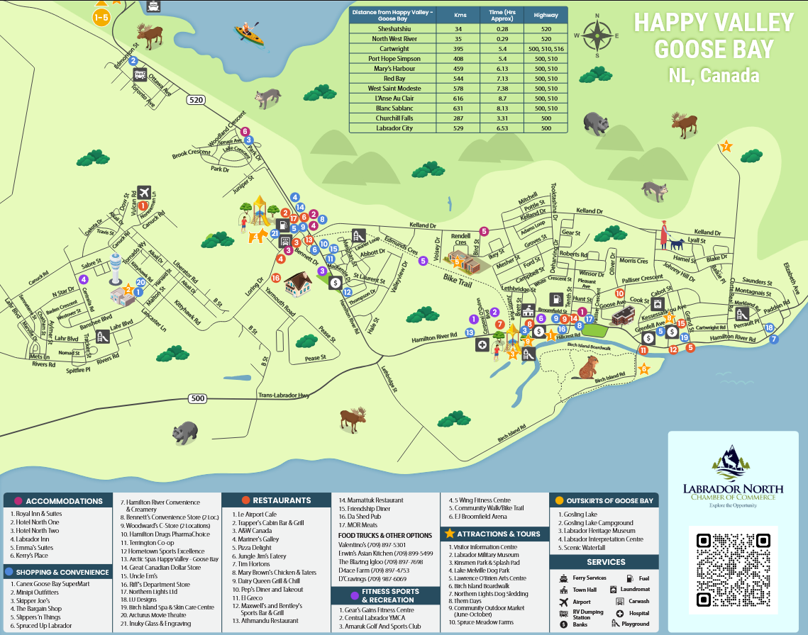

Voici, ci-joint, la carte officiel de Happy-Valley-Goose Bay :

Vous pouvez obtenir la carte en version PDF en cliquant sur le lien ci-dessous : ici
>>>>>>> CSSVoici, ci-joint, la carte officiel de Happy-Valley-Goose Bay :

Vous pouvez obtenir la carte en version PDF en cliquant sur le lien ci-dessous : ici
>>>>>>> CSS